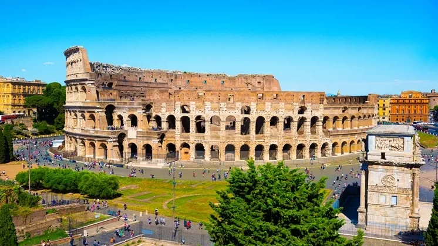
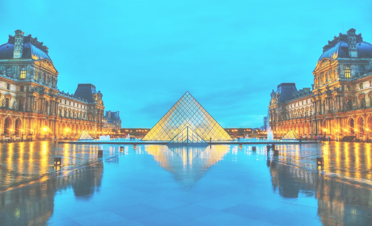
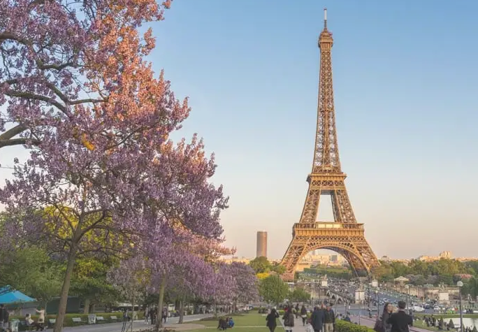

Bem-vindo à EuroTour
Escolha o seu destino
Coliseu
Ao visitar hoje o local, símbolo de Roma e da história da civilização, os turistas podem entender como funcionava esse imenso anfiteatro com capacidade para cerca de 70 mil pessoas, com seus caminhos subterrâneos, rampas e alçapões.
Museu do Louvre
São mais de 60 mil metros quadrados e sempre lotado de pessoas querendo conhecer as belas obras de arte desse grandioso e lindo museu. Por isso, uma dica é visitá-lo sem pressa e com paciência, pois mesmo nos dias menos concorridos, ele fica cheio.
Torre Eiffel
A Torre Eiffel foi inaugurada em 31 de março de 1889 após exatos dois anos e dois meses de obras. Então construção mais alta do mundo (330 metros de altura), a Torre foi erguida para ser a principal obra da Exposição Universal de 1889 que tinha como fio condutor a Revolução Francesa.
Sobre nós
A EuroTur te ajuda a planejar sua viagem para a Europa, desde as passagens aos pontos túristicos mais atraentes. Confira!